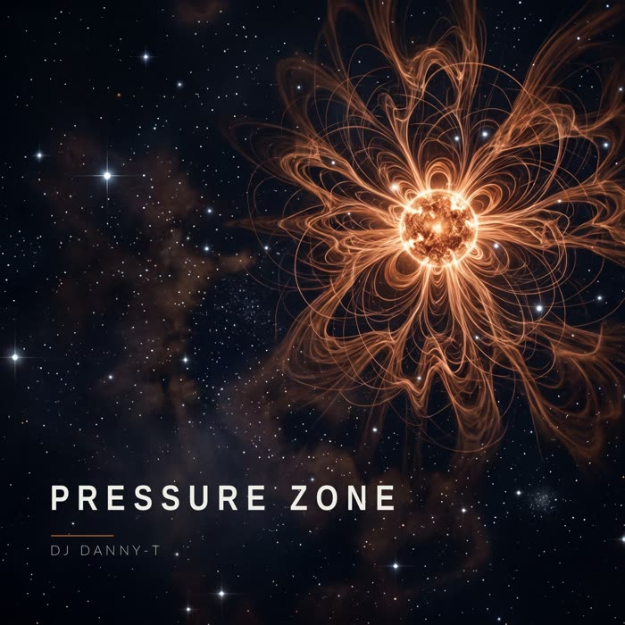
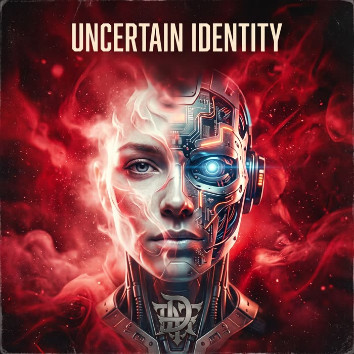

Open format,
background hip hop.
Sono Daniele. Ho iniziato come b-boy, poi ho fatto il DJ agli allenamenti di breaking al Buridda, alle jam hip hop e da resident all'AQA Cafè. Dopo mi sono preso una pausa: lavoro, matrimonio, famiglia. Poi mi sono rimesso al lavoro, e stavolta i pezzi li faccio anch'io.
Il mio primo album, Uncertain Identity, l'ho scritto e diretto io, e l'ha generato un'AI. Da allora le tracce le produco direttamente io. Quando c'entra l'AI, c'è scritto.
- Base
- Genova
- Generi
- Dancehall · dubstep · techno · hip hop · breaks · open format
- Bio breve, da copiare e incollare
- DJ Danny-T è un DJ e producer di Genova. B-boy di origine, dal 2009 al 2013 ha suonato agli allenamenti di breaking, alle jam e nei locali della città, ed è tornato in consolle nel 2026 dopo una lunga pausa. Suona dancehall, dubstep, techno e hip hop, e dal 2026 pubblica musica sua: fatta a mano, oppure fatta con l'AI e dichiarata come tale.
Musica

Pressure Zone fatto a mano
Scritta, suonata, mixata e masterizzata da me, comprese le poche voci. Moombahton con feeling da techno. Errori inclusi.

Uncertain Identity AI
Dubstep, techno, garage, moombahton, dancehall. Scritto e diretto da me, generato con l'AI.
Live
- 2026Open turntable da DJ Kamo, Genova
- 2012OBC – Okult Breaking Contest, Molo del Surf, Varazze · DJ della prima edizione
- 2012Hip Hop Night, Crazy Bull Café, Genova
- 2012Apertura a Tecniche Perfette, Terra di Nessuno, Genova
- 2011–2013Resident all'AQA Cafè, Genova · apertura il venerdì, serata intera il sabato
- 2009–2011Allenamenti di breaking al Buridda, jam hip hop, Genova
Scheda tecnica
Porto io
- Pioneer DDJ-SB, più una Numark V7 se serve
- Laptop con VirtualDJ e Serato
- Scheda audio per il DVS: mi collego a qualsiasi mixer + giradischi con il mio laptop. Ho i vinili apposta.
Oppure uso quello del locale
- Qualsiasi mixer con due canali liberi
- Qualsiasi controller DJ: mi serve solo il modello e preparo i driver
- CDJ: chiavetta rekordbox o laptop, decidiamo insieme in base allo spazio disponibile
Mi serve
- Un tavolo, una presa di corrente, un monitor in consolle
- Un impianto audio a cui collegarmi. Le connessioni disponibili le concordiamo prima, così ci organizziamo.